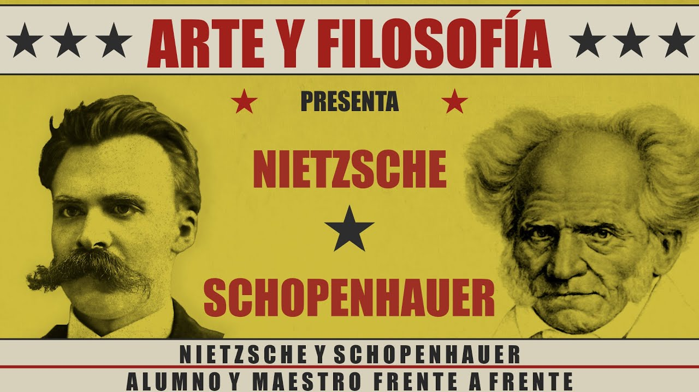

¿Quien es Elon Musk? ...
Elon Reeve Musk (Pretoria, Sudáfrica, 28 de junio de 1971) es un físico, emprendedor, inventor y magnate sudafricano, nacionalizado canadiense y estadounidense. Cofundador de PayPal, Tesla Motors, SpaceX, Hyperloop, SolarCity, The Boring Company, Neuralink, y OpenAI. Es director general de SpaceX, de Tesla Motors, presidente de SolarCity, y copresidente de OpenAI.
Lo último en noticas Elon Musk
Elon Musk, no para: ahora es cantante
La tecnología de lectura mental
Un poco sobre su vida ...
Musk afirma que los propósitos de SolarCity, Tesla, y SpaceX, giran alrededor de su visión de cambiar el mundo y la humanidad de forma drástica. Algunas de sus metas consisten en frenar el proceso de calentamiento global mediante el abandono de los combustibles fósiles por energías renovables, sobre todo la energía solar, para así reducir el riesgo de una posible extinción de la raza humana, a través de la evolución hacia una "civilización multiplanetaria" y la creación de una colonia humana permanente en Marte de alrededor de un millón de personas.
A Elon Musk se le atribuye frecuentemente la creación del primer automóvil eléctrico económicamente viable, el Tesla Roadster. Además, Musk ha diseñado un sucesor privado del transbordador espacial, el Falcon 9. SpaceX es la empresa privada de exploración espacial más grande del mundo.
Musk nació y fue criado en Sudáfrica por su padre, un ingeniero sudafricano, Errol Musk; y su madre, Maye Haldeman, una nutricionista y modelo canadiense.
Musk compró su primer ordenador, un Commodore VIC-20, cuando tenía 10 años y aprendió a programar por su cuenta.
Vendió su primer programa, un juego del espacio llamado Blastar, por el equivalente a 500 dólares cuando tenía apenas 12 años. El dinero que ganaba programando lo gastaba en cómics, ordenadores y juegos de rol como Dungeons and Dragons.
Entre los 12 y 15 años, tuvo una crisis existencial sobre el sentido de la vida. Leyó algunos libros de Nietzsche y Schopenhauer y Guía del autoestopista galáctico.

-"Yo no tengo nada en contra de servir en el Ejército en sí, pero servir en el Ejército sudafricano para reprimir a la gente negra no me pareció una buena forma de emplear mi tiempo".
Quería ir a vivir a los Estados Unidos.
-"Ahí es donde grandes cosas son posibles".
Sus padres se divorciaron. Su madre había nacido en Regina, Saskatchewan, Canadá, de padres estadounidenses, y como muchos de sus parientes vivían en el Oeste Canadiense, Musk emigró a Canadá con su madre en junio de 1989.
Su padre le dijo que no le pagaría la universidad salvo que ésta estuviera en Sudáfrica. En 1992 obtuvo una beca para estudiar Economía y Física en la Universidad de Pensilvania. Recibió su título del Wharton School en la Universidad de Pensilvania y se quedó un año más en la universidad para completar su segundo título en Física.
Uno de sus profesores en la Universidad de Pensilvania era director ejecutivo de una empresa en Los Gatos, Silicon Valley, dedicada a investigar ultracondensadores electrolíticos destinados a vehículos eléctricos. Elon Musk trabajó un verano en la empresa Pinnacle Research. Esos ultracondensadores tenían una densidad energética muy alta, pero sus componentes químicos eran carísimos y se vendían por miligramos porque había muy pocas minas que los extrajeran. No eran escalables para su producción en masa.
-"Una de ellas era internet, otra la energía renovable y la otra era el espacio".
En febrero de 2005 la fortuna de Musk era de 328 millones de dólares y en julio de 2019 la cifra aumentó a 20.500, su historia continuará ...